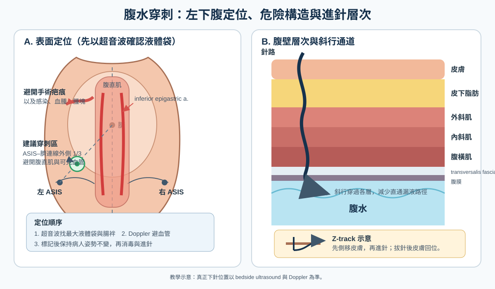
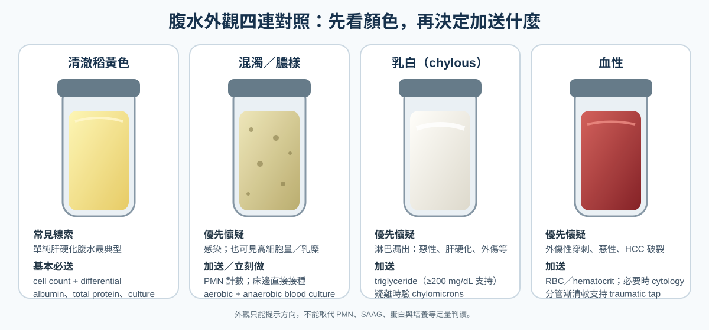

檢查
Ascitic fluid analysis ｜ 腹水分析 · Diagnostic paracentesis
筆記更新 2026-07-28·整理狀態：可用
其他名稱 5
Ascitic fluid analysis · 腹水分析 · Diagnostic paracentesis · 診斷性腹腔穿刺 · SAAG
原理 Principle
flowchart TD
N["腹腔<br/>正常僅少量漿液"]
N --> P1["門脈／肝竇靜水壓↑"]
N --> P2["腹膜通透性改變<br/>感染・腫瘤・胰液"]
P1 --> G1["SAAG ≥1.1<br/>門脈高壓性"]
P2 --> G2["SAAG <1.1<br/>非門脈高壓性"]
G1 --> C1["肝竇毛細血管化<br/>蛋白留在血管內"]
G1 --> C2["肝竇內皮完整<br/>蛋白照樣被推出"]
C1 --> T1["腹水總蛋白 <2.5<br/>肝硬化"]
C2 --> T2["腹水總蛋白 ≥2.5<br/>心因性・肝後性"]
classDef hub fill:#263238,stroke:#000,color:#fff,font-weight:bold
classDef port fill:#1b5e20,stroke:#0b3d0b,color:#fff,font-weight:bold
classDef nonp fill:#e65100,stroke:#a33d00,color:#fff,font-weight:bold
classDef lab fill:#0d47a1,stroke:#062a5e,color:#fff,font-weight:bold
class N hub
class G1 port
class G2 nonp
class T1,T2 lab
筆記中的流程與關係
 正常肝竇左側可見 fenestrated LSEC、quiescent hepatic stellate cell（HSC）與稀疏 ECM；纖維化後 LSEC 去窗孔化、形成 basement membrane，HSC 活化並沉積 ECM，構成 sinusoidal capillarization。這層屏障使蛋白較不易進入 Disse space 與腹水。Source: Liver Sinusoidal Endothelial Cells in Liver Fibrosis, Fig. 1。
正常肝竇左側可見 fenestrated LSEC、quiescent hepatic stellate cell（HSC）與稀疏 ECM；纖維化後 LSEC 去窗孔化、形成 basement membrane，HSC 活化並沉積 ECM，構成 sinusoidal capillarization。這層屏障使蛋白較不易進入 Disse space 與腹水。Source: Liver Sinusoidal Endothelial Cells in Liver Fibrosis, Fig. 1。
什麼時候做
寫「決策情境」，不要列疾病清單——那清單無上限，會爆炸。
- 當你想回答「這包腹水是什麼原因造成的、有沒有感染」的時候
- 新發生的腹水一律先抽；已知肝硬化腹水的病人只要住院，不論有無症狀都該做一次診斷性穿刺（SBP 可以完全沒有腹痛與發燒）
- 已知腹水的病人出現 Fever、腹痛、腹部壓痛、Hepatic encephalopathy 惡化、腎功能惡化、白血球上升、或不明原因 Shock
- 大量腹水造成呼吸窘迫、腹壁張力痛時，順道取檢體（此時的抽液本身屬 Intervention 範疇）
怎麼做 / 病人準備
| 項目 |
內容 |
| 姿勢 |
平躺、床頭稍抬；液量少時可稍向穿刺側傾（左側臥），讓液體聚到左下腹 |
| 穿刺點 |
左下腹：anterior superior iliac spine（ASIS）內上方約 3–5 cm、腹直肌鞘外側。為什麼不選右邊：右下腹的 caecum 位置固定且常脹氣；左側 sigmoid 可移動、腹壁較薄、液池通常較深 |
| 一定要避開 |
腹直肌鞘（內有 inferior epigastric artery）、手術疤痕（下方常有腸沾黏被固定）、可見的腹壁靜脈曲張（caput medusae） |
| 導引 |
超音波先確認液池與深度（Abdominal ultrasound↗）；進針用 Z-track（皮膚拉偏再進針）減少滲漏 |
| 術前 |
排空膀胱；不需常規矯正 PT/INR 或血小板（見下方反直覺一節） |
| 送檢項目 |
外觀、細胞數＋分類（EDTA 管）、albumin、total protein、Gram stain、細菌培養；視情況加 glucose、LDH、amylase、ADA、抗酸染色＋結核培養、triglyceride、cytology |
| 培養怎麼送 |
床邊直接把腹水各 10 mL 打進有氧／厭氧血液培養瓶；送到實驗室才接種會讓敏感度大幅下降 |
| 同時抽血 |
血清 albumin（同一天、最好同時）——沒有血清值就算不出 SAAG |

左下腹穿刺示意：選 ASIS–臍連線外側 1/3 附近、避開腹直肌與 inferior epigastric vessels；先以超音波找最大液體袋，再用 Doppler 排除血管。右圖顯示腹壁層次、斜行針路與 Z-track 的皮膚位移；Z-track 並非超音波導引的替代品。依 Diagnostic and therapeutic abdominal paracentesis 與 Z-track technique and post-paracentesis leak 重繪。
判讀 Interpretation
第一步：SAAG ＝ 血清 albumin − 腹水 albumin
第二步：腹水總蛋白（只有 SAAG ≥1.1 時才有分辨力）
| 腹水總蛋白 |
指向 |
機轉 |
| < 2.5 g/dL |
肝硬化 |
肝竇 capillarization（毛細血管化）：內皮窗孔消失＋基底膜生成，蛋白漏不出去 |
| ≥ 2.5 g/dL |
心因性（右心衰竭、Constrictive pericarditis）或肝後性（Budd-Chiari syndrome↗） |
肝竇內皮尚完整（本來就是高通透性），壓力一升高蛋白照樣被推出來 |
第三步：有沒有感染
| 腹水 PMN |
培養 |
名稱 |
處置 |
| ≥ 250/mm³（AASLD 原文寫 ＞250，EASL 與多數教材寫 ≥250；實務無差異） |
陽性 |
SBP（spontaneous bacterial peritonitis） |
立刻抗生素 |
| ≥ 250/mm³ |
陰性 |
culture-negative neutrocytic ascites（CNNA） |
預後與 SBP 相同，一樣治 |
| < 250/mm³ |
陽性 |
bacterascites |
有症狀 → 治療；無症狀 → 重抽再決定 |
| < 250/mm³ |
陰性 |
無腹水感染 |
找別的感染源 |
SBP vs Secondary bacterial peritonitis（分不出來會死人）
|
SBP（原發性） |
Secondary（腸穿孔／腹內膿瘍） |
| 病原 |
單一菌種：E. coli、Klebsiella、Streptococcus |
多菌種，常含厭氧菌或黴菌 |
| 腹水生化 |
總蛋白低、glucose 正常、LDH 不高 |
總蛋白 > 1 g/dL、glucose < 50 mg/dL、LDH > 血清正常上限（三者符合其二即高度懷疑） |
| 追蹤反應 |
抗生素 48 小時後 PMN 明顯下降 |
PMN 不降或反升 |
| 處置 |
抗生素 ＋ albumin |
立刻腹部 CT ＋ 外科會診，光給抗生素治不好 |
SBP 的經驗性治療與 albumin
| 項目 |
內容 |
| 第一線 |
第三代 cephalosporin（cefotaxime 或 ceftriaxone），社區型感染首選 |
| 升階時機 |
院內感染、近期使用過抗生素、當地抗藥性高 → 涵蓋 ESBL |
| 絕不使用 |
aminoglycoside——肝硬化病人腎毒性風險特別高 |
| Albumin 給法 |
AASLD 2021／EASL：所有 SBP 都應給（1.5 g/kg D1 ＋ 1 g/kg D3）。獲益最明顯者：Cr ＞1 mg/dL 或 BUN ＞30 mg/dL 或 total bilirubin ＞4 mg/dL |
| Albumin 劑量 |
Day 1：1.5 g/kg（診斷後 6 小時內）＋ Day 3：1 g/kg，目的是預防 AKI 與 hepatorenal syndrome |
| 預防 |
初級：腹水總蛋白 < 1.5 g/dL ＋ 進階肝／腎功能不良者；次級：得過一次 SBP → 長期口服預防性抗生素 |
其他送檢項目在說什麼
| 檢驗 |
切點／發現 |
指向 |
| Cytology |
陽性 |
腹膜癌轉移。注意 hepatocellular carcinoma 造成的腹水多半是門脈高壓性，cytology 常為陰性 |
| Amylase |
> 1000 U/L（且遠高於血清） |
胰源性腹水：Acute pancreatitis、pseudocyst 破裂、胰管斷裂；腸穿孔亦可升高 |
| ADA ＋ 抗酸染色／結核培養 |
ADA ＞40 U/L（文獻切點散在 32–40，40 最常用）、淋巴球為主 |
結核性腹膜炎。非肝硬化者多為 SAAG ＜1.1；但合併肝硬化時 SAAG 可 ≥1.1，且 ADA 敏感度只剩約 30%——ADA 正常不能排除 |
| Triglyceride |
> 200 mg/dL、外觀乳白 |
乳糜腹水（chylous ascites）：淋巴瘤、腹部術後淋巴管損傷、肝硬化 |
| Glucose / LDH |
glucose < 50 mg/dL、LDH 高 |
往 secondary peritonitis 或惡性腹水想 |
| Bilirubin |
腹水 bilirubin > 血清 |
膽汁性腹水（膽道或腸穿孔），見 RUQ pain |
| RBC |
> 50,000/mm³ 為肉眼血性 |
外傷、HCC 破裂、穿刺劃破血管 |

腹水 gross appearance 四連對照。外觀只提供方向：混濁／膿樣仍以 PMN 與培養確認感染；乳白優先驗 triglyceride、必要時 chylomicrons；血性加看 RBC／hematocrit 並依情境送 cytology。依 Ascitic Fluid Analysis in the Differential Diagnosis of Ascites 的外觀判讀原則重繪。
干擾與偽陽性
這一節最常被跳過，也最常害人。
| 會讓結果失真的因素 |
往哪個方向偏 |
| 血清與腹水 albumin 不同天抽、或正在輸注 albumin |
血清端被墊高或已變動 → SAAG 假性升高。兩管必須同日 |
| 極度低白蛋白血症（血清 albumin ＜1.1 g/dL，約占肝硬化腹水的 ＜1%） |
數學上不可能算出 ≥1.1 → SAAG 假性偏低、假性「非門脈高壓」。重抽常轉為高 SAAG |
| 血性腹水（穿刺劃破血管或 HCC 破裂） |
血中白血球混入 → PMN 假性升高。校正：每 250 顆 RBC 扣掉 1 顆 PMN |
| 檢體放太久才做細胞計數 |
白血球溶解 → PMN 假性偏低，漏掉 SBP |
| 培養在實驗室才接種，或抽腹水之前已給抗生素 |
培養假陰性（但 PMN ≥250 仍要治） |
| 利尿劑治療中 |
利尿使腹水濃縮，總蛋白可顯著上升（約 2/3 病人），第二步可能被誤導向心因性；SAAG 相對不受影響 |
| 高球蛋白血症（血清 globulin ＞5 g/dL） |
腹水 globulin 也高 → SAAG 假性偏低（約占 1%） |
| 乳糜腹水（脂質干擾 albumin 檢測） |
SAAG 假性偏高 |
| 低血壓／休克 |
門脈壓一併下降 → SAAG 假性偏低；血壓回穩後重抽常轉為高 SAAG |
與相關檢查的取捨
| 檢查 |
優點 |
缺點 |
什麼時候選它 |
| 本篇（腹水分析） |
唯一能定病因、唯一能判定有無感染 |
侵入性；有出血、腸穿孔、滲漏風險 |
新發腹水、肝硬化腹水住院、疑似感染 |
| Abdominal ultrasound↗ |
快、無創、可即時導引穿刺 |
只能說「有水」，說不出是什麼水 |
確認腹水存在、穿刺前定位 |
| 血液培養 |
SBP 常合併菌血症，可補抓病原 |
陰性不能排除 SBP |
懷疑 SBP 時同時送 |
| 腹部 CT |
找穿孔、膿瘍、腫瘤、肝靜脈阻塞 |
輻射、顯影劑腎毒性 |
懷疑 secondary peritonitis 或病因不明 |
| 超音波心圖 |
抓右心衰竭與 constrictive pericarditis |
對腹腔本身無資訊 |
SAAG ≥1.1 但總蛋白 ≥2.5 時 |
禁忌與陷阱
相關連結